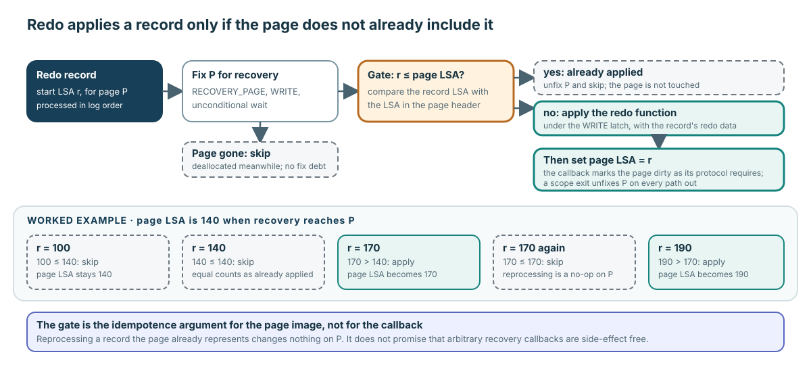

Checkpoint는 coordination이지 “모든 page를 flush”하는 작업이 아니다
- Log code가 append state를 flush하고 checkpoint 시작을 기록한다.
- Page buffer는 checkpoint boundary까지 조건을 만족하는 dirty page만 골라 flush하고, 남은 redo floor를 보고한다.
- Filesystem synchronization이 설정된 boundary를 확정한다.
- Log code가 active transaction/system-operation state를 기록하고 end-checkpoint/header state를 영속화한다.
- Permanent-volume checkpoint metadata를 기록한 뒤 설정된 DWB boundary를 거쳐 동기화한다.
Page buffer가 담당하는 것은 선택적 page propagation이다. 전체 checkpoint record, WAL, filesystem sync, volume metadata protocol까지 소유하는 것은 아니다.
Verified mechanism: pinned checkpoint coordination은 log_page_buffer.c:6901–7406에서 확인할 수 있다.
적용하기 전에 비교한다

값이 같으면 이미 반영된 것이다. record LSA ≤ page LSA이면 skip한다.
- Recovery는 caller가 건넨 identity를
RECOVERY_PAGE, WRITE, unconditional access로 fix한다. - Redo record LSA와 현재 page LSA를 비교한다.
record_lsa <= page_lsa이면 unfix하고 skip한다. 해당 변경이나 그 이후 변경이 이미 page에 반영되어 있기 때문이다.- 그렇지 않으면 WRITE protection 아래에서 선택된 recovery callback을 적용한다.
- Page LSA를 record LSA까지 전진시키고, recovery protocol이 요구하는 대로 page를 DIRTY로 표시한 뒤 모든 exit에서 release한다.
Verified mechanism: gate는 log_recovery.c:497–536, fetch semantics는 6407–6431, apply/LSA/cleanup은 log_recovery_redo.hpp:587–668에 있다.
Page LSA가 140이면 120과 140은 skip, 170은 apply
| Redo record | Page LSA와 비교 | 동작 | 새 page LSA |
|---|---|---|---|
| 120 | 120 < 140 | Skip하고 release한다. | 140 |
| 140 | 140 = 140 | Skip하고 release한다. | 140 |
| 170 | 170 > 140 | Callback을 적용하고 DIRTY로 표시한 뒤 release한다. | 170 |
이제 record 170을 다시 만나면 page LSA가 이미 170이므로 skip한다. 이것이 page 변경에 대한 idempotence 논리다. Page 밖에서 callback이 일으키는 임의의 side effect까지 idempotent하다고 보장하는 것은 아니다.
Recovery는 일반 caller가 모르는 allocation history를 안다
RECOVERY_PAGE, OLD_PAGE_DEALLOCATED, OLD_PAGE_MAYBE_DEALLOCATED에는 redo/undo와 allocation history에 관한 recovery의 지식이 담겨 있다. 따라서 일반 OLD_PAGE validation이라면 거부할 state를 받아들이거나 skip할 수 있다.
Log record 이후에 page가 deallocate되었다면 redo는 이를 skip할 수 있으며, 이 skip은 fix debt를 만들지 않는다. Logical allocation/deallocation의 owner는 여전히 file/disk code다. Page buffer는 그 owner가 선택한 identity를 materialize하거나 cache coherence를 지키며 invalidate한다.
Recovery도 logged page와 같은 방식으로 state를 전이한다
Gate가 apply를 선택하면 익숙한 ownership 순서로 돌아온다. WRITE-protected byte를 수정하고, page LSA에 가장 최근에 반영된 log action을 기록하며, DIRTY로 propagation debt를 공개하고, scope cleanup에서 모든 exit의 fix를 갚는다.
차이는 의미를 정하는 주체다. Recovery는 log record를 보고 callback과 special fetch mode를 고른다. 일반 page-buffer Module은 resident identity, byte protection, LSA interface, dirty state, release mechanics를 제공한다.
이 function scope가 끝날 때 stack guard가 pointer를 unfix한다
fix/gate가 redo를 계속하라고 판단한 뒤 log_rv_redo_record_sync()는 local scope_exit unfix_rcv_pgptr를 만든다. 이 guard는 thread_p와 stack-local rcv를 reference로 capture한다. Destructor는 pgbuf_unfix_and_init_after_check(thread_p, rcv.pgptr)를 호출한다.
rcv.pgptr가 non-null이면 helper가pgbuf_unfix()를 정확히 한 번 호출하고 pointer를 null로 만든다.- Destructor는 정상적으로 function 끝에 도달할 때와 redo-data 추출 실패 뒤 명시적 early return을 할 때 모두 실행된다.
- guard가
rcv뒤에 선언되었으므로 역순 destruction에서rcv가 살아 있는 동안 cleanup이 먼저 실행된다. - callback이 pointer를 null로 남기면 cleanup은 아무 일도 하지 않는다. guard 생성 전에 skip하는 path는 pointer가 null이라는 postcondition을 이미 assert한다.
Verified mechanism: guard 사용은 log_recovery_redo.hpp:601–668, null-safe unfix-and-clear helper는 page_buffer.h:64–71, guard destructor는 scope_exit.hpp:28–80에 있다.
Checkpoint처럼 보이는 성공만으로 crash redo를 입증할 수 없다
기존 checkpoint/backup 관찰만으로 restart redo, page별 WAL ordering, DWB recovery, torn-page handling, home-page persistence를 입증할 수 없다. Source는 의도된 gate를 보여줄 뿐이다. Crash safety에 대한 runtime evidence를 얻으려면 controlled crash point, 정확한 build/configuration, 주장하는 boundary에서의 restart 이후 state validation이 필요하다.
Skip, apply, debt 없는 부재를 구분한다
문제
Checkpoint가 redo floor를 반환했다. Restart 중 page LSA가 140인 page에 record 120, 140, 170이 차례로 들어오며, 다른 target page는 이미 deallocate되었다.
할 일: 각 operation의 owner를 정하고 모든 skip/apply/debt 결과를 판단한 뒤, 이 scenario가 crash persistence에 관해 무엇을 입증하지 못하는지 정확히 설명하라.
답안을 chat에 붙여 넣으세요. Advanced 진도를 기록하기 전에 비교 방향, owner boundary, debt, crash-evidence 표현을 확인하겠습니다.
Callback보다 먼저 skip 경로를 추적한다
Pinned log_recovery.c:497–536와 log_recovery_redo.hpp:587–668을 읽으세요. Special fix, absent-page skip, page-LSA 비교, callback, LSA 전진, DIRTY publication, scope cleanup을 표시합니다.